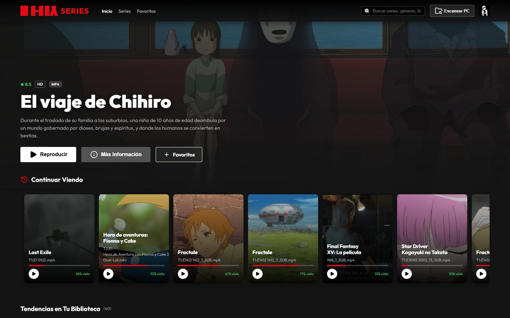
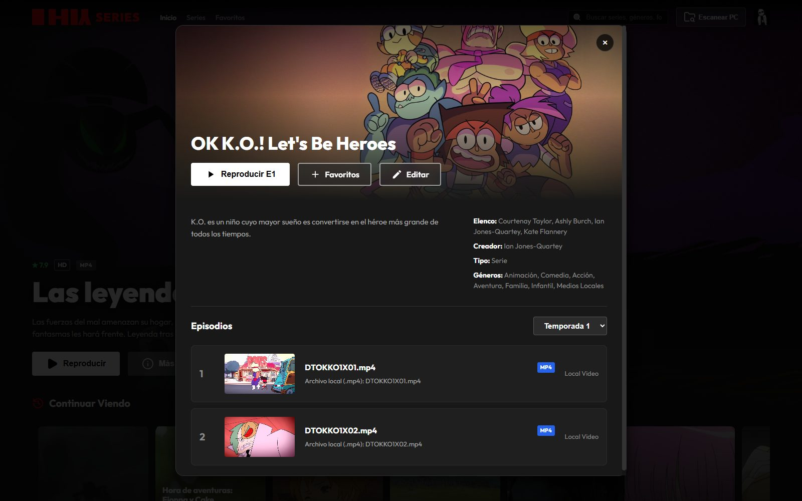
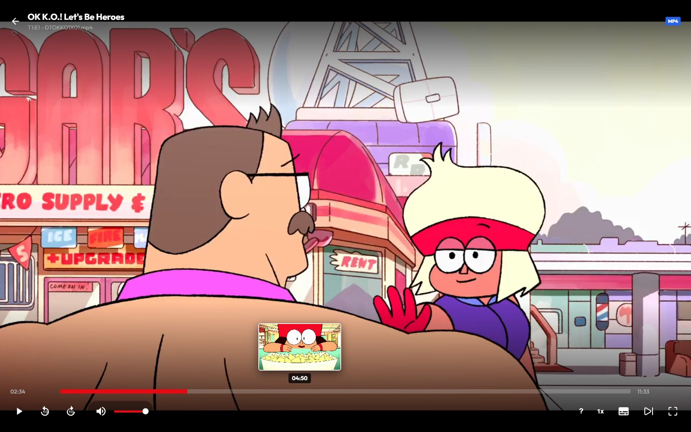

Tus series,
tu streaming.
Elige la carpeta con tus videos y HIY Series arma el catálogo con pósteres, descripciones y temporadas. Como una plataforma de streaming, pero en tu PC.

Cómo funciona
Mírala hacer lo suyo.
Toca una función para verla en acción.
Así se ve
Pensada para verse bien en la tele del salón y en el portátil.


Instalar
Listo en tres pasos.
Descarga el instalador
Es un único archivo: HIY.Series.Setup.1.0.0.exe
Elige idioma y carpeta
El asistente te pregunta el idioma y dónde instalarla, y crea el acceso directo en el escritorio.
Crea tu perfil y escanea
Abre la app, crea tu perfil y pulsa «Escanear PC» para elegir la carpeta de tus series.
Windows SmartScreen puede avisar de que la app no es conocida, porque el instalador todavía no está firmado. Pulsa Más información → Ejecutar de todas formas.
Requisitos: Windows 10 u 11 de 64 bits. Opcional: ffmpeg para el audio Dolby/DTS.
Privacidad
Tus videos no salen de tu PC.
Sin cuentas, sin nube y sin anuncios. HIY Series solo se conecta para buscar pósteres y descripciones.
- Todo pasa en tu equipo. Tus videos no se suben a ningún sitio.
- Servidor solo local. El servidor interno solo escucha en tu propio PC.
- Traducción sin internet, con modelos que se ejecutan en local.
- Clave cifrada. Si usas tu clave de TMDB, se guarda cifrada con Windows.
Tu sofá ya tiene su plataforma.
Descarga HIY Series gratis y convierte tu carpeta de videos en tu propio streaming.